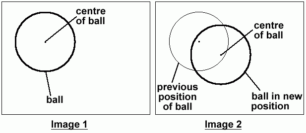
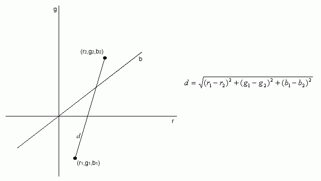
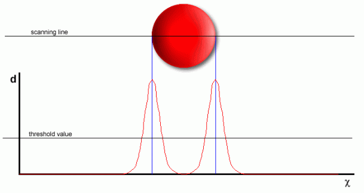
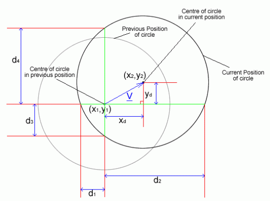
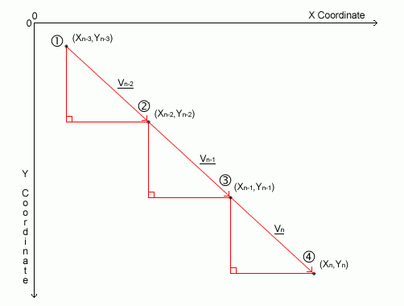
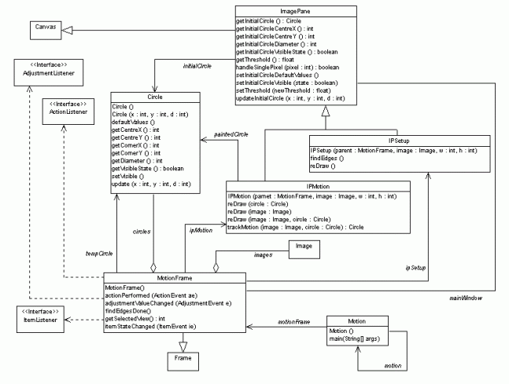

Contents
- Summary
- Introduction
- Design & Specification
- Implementation & Testing
- Project Management
- Conclusions
- Appendix
- Bibliography
©2000-2001 Adrian Banks
Last Updated : 18th May 2001
Last Updated : 18th May 2001
Assumptions & Design Restrictions
To fulfil a successful design and implementation of a real time motion tracking system, certain restrictions had to be decided on for the way in which objects would be tracked.
Firstly, since the main objective of the system is to track "George" the robot who is circular in shape (viewed from above), the main assumption behind the design of the motion tracking algorithm is that only objects that appear as circular in shape from above will be recognised (ie. circles, upright cylinders and spheres).
Secondly, since George can move at a maximum speed of X mm/sec (as quoted in the initial design problem), an assumption has been made on the maximum speed of an object being tracked. This assumption is that in any two adjacent images taken by the camera, an object's centre from the first image is within the object's boundary in the second image.

Figure 2.1a : assumption made on the speed of motion of an object
Figure 2.1a shows two adjacent frames taken by the camera. Image one shows the ball and its centre. Image two shows the ball having moved in the time between which the two images were taken. For motion tracking to take place, it is assumed that the centre of the ball in its position in image two is within the boundary of the ball in image one.
By making this assumption, a restriction is put on the maximum speed of a moving object that can be tracked by the system, which varies according to the size of the object being tracked. This restriction is necessary because the system has a definite time to calculate the new position of the object from the picture data. If the image analysis were not completed before the next frame was analysed, the system would lose track of the moving object. As a result, tracking is speeded up massively since it is not necessary to scan the whole image in each frame to locate the circle. If the position of the circle was lost, the program could resort to scanning the whole image to re-find the circle from scratch.
An added area of complexity is due to the fact that the camera is moving. Whilst tracking the circle, it is the relative speed of the circle in relation to the movement of the camera that is applicable and not the absolute speed of the circle.
One final assumption is that since the camera is always overhead when videoing an object, there is no depth perception (ie. the camera is a permanent vertical distance from the object). This assumption is required because of the design of the camera mounting rig.
Camera Resolution
The camera being used to capture image data is a "Philips VGA Digital Camera". This camera is capable of capturing colour and black and white images at various resolutions. As the resolution increases, the physical size of a captured image in memory increases, as does the number of pixels contained within the image.
Measurements were done (see "Camera Resolution" section in the Appendix) and a resolution of 160 by 120 pixels was decided upon based on the height of the camera from the second year design track (as stated in the initial design problem) when in its mounting. This height is estimated at 66.0cm (26.0"), giving a total visible area for the camera of 50.5cm by 35.1cm (19.9" by 13.8"). This is an adequate visible are for the system to perform analysis on and will allow errors, as an object should still be visible by the camera even if the system loses track of it, allowing the system to reanalyse the image data to re-find the object. This also satisfies memory requirements with a single image from the camera being 28.8Kbytes in size - small enough for several images to be stored easily in memory at one time without demanding too much of the system's resources.
Edge Detection
There are many edge detection techniques and algorithms in existence that provide an accurate result when implemented correctly. Some of these are considered below.
Laplace Filter
This is a 2nd order partial derivative taken in two dimensions with respect to each direction (also called "the divergence of the gradient"). This returns a value of zero when the rate of intensity change in an image is either zero or linear (ie. no edge). The drawback to this method is that a great deal of noise is introduced into the result of edge detection unless pre-filtering steps are taken using a Gaussian low-pass filter.
Canny Algorithm
This uses a 1st derivative filter to compute gradients within an image and then estimates noise levles by calculating the root mean square of the 2nd derivative of the filter response. In reality, this uses the Laplace filter technique above with the extension of noise estimation.
Condensation Algorithm (Conditional Density Algorithm)
This uses a probability density function to estimate different possibilities of edges within an image and to then apply the correct one. This algorithm is capable of detecting objects in complex images and can run in near real-time.
JAI - GradientMagnitude()
This is an extension to the Java language that provides extra support for image processing. The GradientMagnitude() method uses a kernel to process the image using a convolution method to give an image with just the edges.
Hough Transform
This is used to detect straight lines within an image by the use of a mapping to a parameter space, followed by a sorting algorithm.
Each of these techniques provides a method of performing edge detection on a image and there are many more in existence. The problem lies in which one to use. Some techniques are optimised for straight lines (horizontal, vertical or diagonal) and others for simple circles.
Of the techniques listed above, the only ones that works with colour images are the GradientMagnitude method of the JAI interface and the Hough Transform. All of the other techniques require a greyscale image to function correctly, adding more processing time to the algorithms. Since speed is the priority in this project, these techniques will not suffice. Whilst the JAI method does use colour, it is necessary to have the language extension installed to compile or run any code that uses it. This is an obvious drawback to the universal nature of the Java language making the algorithm not suitable for this application. Similarly, the Hough Transform is not suitable because it primarily identifies straight lines and will therefore not detect circles within an image.
To combat these problems, a customised technique, "Pixel Colour Difference", was developed to prform edge detection, giving a crude but speedy result. This works by using a three-dimensional colour model and calculating the Pythagorean distance between the values of the components of the colours of adjacent pixels (red r, green g, blue b components) within an image (see Figure 2.3a). A difference of squares method is used to eliminate any negative values to give a comparable value.

Figure 2.3a : a 3D colour model
This calculated distance is then compared with a threshold value to determine if is a sudden rapid change in colour exists. This change of colour is taken to signify that an edge exists at the particular point within the image. If an edge is determined, it is marked on the image.
If this technique is used throughout an entire image, every edge within the image can be detected. By altering the sensitivity threshold (see "threshold value" in Figure 2.3b), adjustment of the amount of edges detected can be achieved. This can be adjusted at any time during execution.
To perform edge detection on an entire image, each pixel in the image is compared with its adjacent pixel. The colours of these pixels are used to calculate if an edge exists at that particular point in the image. For a full image, this must be done many times by scrolling through the image pixel by pixel and performing this calculation on each pair of pixels encountered

Figure 2.3b : edge detection technique developed for speed and simplicity
Problems arise with this method when scanning in the same direction as a straight edge, since there is no colour transition between adjacent pixels. This is not a major problem however, as the system is intended to be used to track circles only. If it were to be a problem, it could be overcome by simply scanning in another direction.
Since the edge detection algorithm does not involve any complex image handling techniques such as kernels or Gaussian filters, it should be performed very quickly during execution.
Motion Tracking
As already discussed, basic motion tracking will be achieved using the assumption that the centre of the circle being tracked at any time will lie within the circumference of the circle in the previous frame (see "Assumptions & Restrictions" section).
This allows the motion tracking algorithm to be simple, utilising only basic mathematical techniques to calculate the position of the circle once edge detection has been performed.
To calculate the position of the circle in a frame after edge detection has been performed, it is necessary to take four measurements from the image. By starting at the position of the centre of the circle in the previous frame and scanning both horizontally and vertically until an edge is found (see Figure 2.4a), the position of the centre of the circle in the current frame can be calculated
whereBecause of the symmetry of the circle, the new centre of the circle on the x-axis lies directly in the centre of any chord of the circle that is at a tangent to a radius parallel to the y-axis. This is similarly true for the new centre of the circle on the y-axis.
Hence,
xd + d1 = ½ (d1 + d1)
=> xd = ½ (d2 - d1)
Similarly,
yd + d3 = ½ (d3 + d4)
=> yd = ½ (d4 - d3)
The new centre of the circle (x2,y2) lies at :
(x2,y2) = (x1 + ½ (d2 - d1), y1 + ½ (d4 - d3))
andx2 is the x-coordinate value of the centre of the circle in the current frame
x1 is the x-coordinate value of the centre on the circle in the previous frame
y2 is the y-coordinate value of the centre of the circle in the current frame
y1 is the y-coordinate value of the centre on the circle in the previous frame
d1 is the distance between x1 and the left edge of current circle with the same y value
d2 is the distance between x1 and the right edge of current circle with the same y value
d3 is the distance between y1 and the bottom edge of current circle with the same x value
d4 is the distance between y1 and the top edge of current circle with the same x value
x1, y2 are known from the previous analysis.
d1, d2, d3, d4 can be measured from the current image during the trackMotion() method.
Since only two calculations are needed (x-axis and y-axis calculations) to determine the new position of the circle, the motion tracking algorithm is extremely fast and so can be theoretically done in real-time.
This motion tracking method may not be the most accurate, but speed is the priority.

Figure 2.4a : method for determining the new location of the circle
This could, time permitting, be extended further to include a predicative element based on analysis of the two previous frames and an application of Newton's laws of motion to estimate where the circle will be next :
1. From positions ① to ② in Figure 2.4b, the speed of the circle can be calculated.
average speed = distance / time
vx = Xn-2 - Xn-3 if each frame interval is taken as time = 1 unit
vy = Yn-2 - Yn-3
2. The acceleration for positions ② to ③ can then be calculated.s = ut + ½at2
sx = vx + ½ax = (Xn-2 - Xn-3) + ½ax
sy = vy + ½ay = (Yn-2 - Yn-3) + ½ay
Hence, since
andsx = Xn-1 - Xn-2
sy = Yn-1 - Yn-2
ax = 2(Xn-1 - 2Xn-2 + Xn-3)
ay = 2(Yn-1 - 2Yn-2 + Yn-3)
3. The speed from ② to ③ can now be calculated.v = u + at
vx = (Xn-2 - Xn-3) + ax = (Xn-2 - Xn-3) + 2(Xn-1 - 2Xn-2 + Xn-3)
vy = (Yn-2 - Yn-3) + ay = (Yn-2 - Yn-3) + 2(Yn-1 - 2Yn-2 + Yn-3)
Simplifying
vx = 2Xn-1 - 3Xn-2 + Xn-3
vy = 2Yn-1 - 3Yn-2 + Yn-3
4. The distance travelled between positions ③ and ④ can then be determined, giving the location at which the circle should be in the current frame (assuming no external forces act upon the circle to change its velocity).s = ut + ½at2
sx = vx + ½ax
= (2Xn-1 - 3Xn-2 + Xn-3) + ½(2(Xn-1 - 2Xn-2 + Xn-3))
= 3Xn-1 - 5Xn-2 + 4Xn-3
sy = vy + ½ay
= (2Yn-1 - 3Yn-2 + Yn-3) + ½(2(Yn-1 - 2Yn-2 + Yn-3))
= 3Yn-1 - 5Yn-2 + 4Yn-3
5. By combining the known location of the circle from the previous frame with this distance travelled, a prediction of the new location can be calculated.Xn = Xn-1 + sx = Xn-1 + 3Xn-1 - 5Xn-2 + 4Xn-3
Yn = Yn-1 + sy = Yn-1 + 3Yn-1 - 5Yn-2 + 4Yn-3
Therefore the predicted centre of the circle in the current frame is(Xn,Yn)
where
Xn = 4Xn-1 - 5Xn-2 + 4Xn-3
Yn = 4Yn-1 - 5Yn-2 + 4Yn-3
This analysis is only a prediction and may not be correct, especially if the circle being tracked is accelerating or changing direction

Figure 2.4b : a three frame analysis of the motion of the circle
Class Diagram
The coding of the system has been done to Object-Oriented standards to maintain data integrity between the main classes involved in the system. All data is denoted as private data where possible, with access to it by external classes gained by use of accessor functions. Full use of inheritance is implemented by the ImagePane class giving rise to two derived classes, IPSetup and IPMotion, each of which contain the data and methods of the ImagePane class with some additional components.
The class diagram shown in Figure 2.5a shows the relationships between each of the classes involved in the system and the callable methods that are available for each class. This is a detailed class diagram representing a very close approximation to the final code.

Figure 2.5a : the class diagram for the system